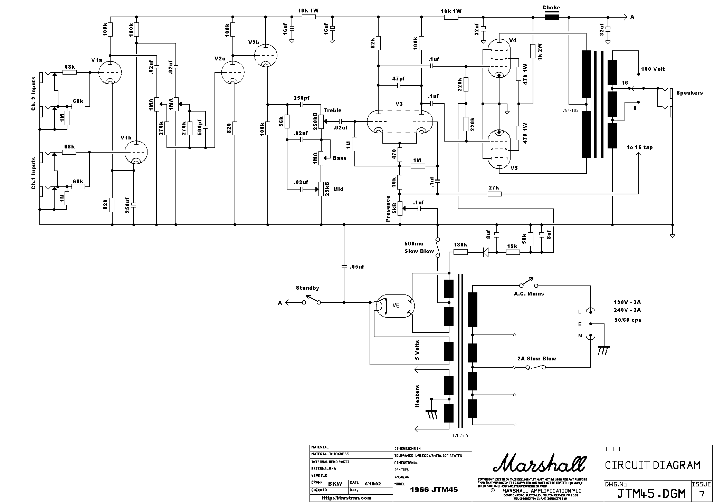

Marshall JTM45 Replica Build

For this project, I built myself a replica of the 1962 Marshall JTM45 amplifier.
The JTM45 was the first guitar amplifier made by Marshall, which is now well known as being one of the best and most classic guitar amplifier manufacturers and designers. This amplifier in particular is known to be one of the most desirable of all Marshall amps. These amps had more of a "tweed Fender" sound, with less crunch and more sag than later Marshalls, which makes it better for the blues and rock (as compared to hard rock or metal).
This build was from scratch - I purchased base electrical components, speakers, an empty cabinet, an amp chassis, and JTM45-style face plates from Mojotone, which is a wholesaler for vintage amp components. I then used standard JTM45 electrical schematics, as seen below.
The original JTM45 didn't include a speaker cabinet, but for my purposes it made sense to build everything into a single cabinet. The output for this amp is 45W - hence the name. I used two 8Ω 60W 12'' speakers, wired in parallel and put on the 4Ω output with a quarter inch jack. This way, the amplifier can still be used standalone without the speakers.
I only ran into a few small problems with during the process of wiring the amp. The primary problem I had was that I misunderstood the literature for the heater leads on the power transformer. I didn't realize what I had screwed up until I hooked it up to an osilloscope and signal generator, at which point I realized there was no output from the first tube. At that point I reviewed the transformer documentation and was able to fix the problem. Photos of the finished amplifier can be found below.

The amp internals
Zoom on the component board
Front view of the completed amp
Rear view

View of input controls with amp installed in cabinet

The speakers mounted and plugged in

The final front view of the cabinet